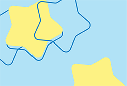

Hobbies
After School When I'm not at school I'm either working, playing Table Tennis, Drawing, or playing video games. Lately, I've been attempting procreate and other digital art-making platforms. I plan to practice a lot this summer before college. Additionally, now that my AP exams are over and I have more freetime, I've been playing more video games like Resident Evil 2.
Ap Art
What's happening in Art? Most of the art you can view in my gallery is a product of my time in Ap Art this year as well as the time I spent curating a portfolio for college admissions. Right now, my classmates and I are working on the Class of 2023 legacy canvas.
Major of Study
BCSA
This fall I'll be pursuing a Bachelor's degree in Computer Science and Arts at Carnegie Mellon University in Pittsburgh, Pennsylvania. I will be concentrating in Electronic Art Media in the School of Art and I will be studying Python and C++ at the School of Computer Science. With this knowledge I will be developing my own games in Unreal and Unity engine. I plan to become a Technical Artist who works with coding and design teams after college.